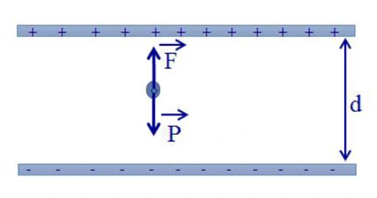
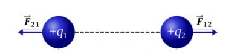
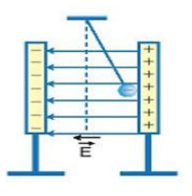

Bài tập — Bài 9 — Cân bằng điện tích và con lắc trong điện trường
Hệ bài tập được biên soạn theo các dạng xuất hiện trong bộ tài liệu Vật lí 11 của dự án. Câu hỏi được giữ ngắn, trực tiếp; độ khó tăng dần và không cố tình thêm dữ kiện gây nhiễu.
Phần A — Trắc nghiệm 4 lựa chọn
Bài 1 — Mức 1 — Nhận biết
Một quả cầu nhỏ khối lượng m, điện tích dương q treo bằng dây trong điện trường đều nằm ngang E. Ở cân bằng, dây lệch góc θ so với phương thẳng đứng. Hệ thức đúng là
A. \(\tan\theta=mg/(qE)\). B. \(\tan\theta=qE/(mg)\). C. \(\sin\theta=qE/(mg)\) luôn đúng. D. \(\tan\theta=q/(mE)\).
Đáp án và lời giải
Chọn B từ cân bằng hai thành phần lực: \(T\sin\theta=qE\), \(T\cos\theta=mg\).
Bài 2 — Mức 1 — Nhận biết
Nếu q âm trong điện trường ngang hướng sang phải, quả cầu cân bằng lệch về
A. bên phải. B. bên trái. C. không lệch. D. lên trên.
Đáp án và lời giải
Chọn B vì lực điện ngược chiều E.
Bài 3 — Mức 1 — Nhận biết
Trong điện trường đều thẳng đứng cùng chiều trọng lực, điện tích dương chịu gia tốc hiệu dụng về độ lớn
A. \(g-qE/m\). B. \(g+qE/m\). C. \(qE/(mg)\). D. luôn bằng g.
Đáp án và lời giải
Chọn B nếu lực điện cùng chiều trọng lực.
Bài 4 — Mức 1 — Nhận biết
Hai điện tích dương giống nhau treo đối xứng bằng hai sợi dây. Khi điện tích tăng, các yếu tố khác giữ nguyên, góc lệch cân bằng thường
A. giảm. B. tăng. C. không đổi. D. bằng 0.
Đáp án và lời giải
Chọn B vì lực đẩy Coulomb tăng.
Phần B — Đúng/Sai
Bài 5 — Mức 2 — Thông hiểu
Con lắc tích điện trong điện trường đều ngang:
a) Ở cân bằng, tổng lực bằng 0. b) Có thể gộp trọng lực và lực điện thành một “trọng lực hiệu dụng” về mặt động lực học. c) Nếu E ngang thì \(g_{hiệu}=g+qE/m\) theo đại số một chiều. d) Dấu điện tích quyết định phía lệch.
Đáp án và lời giải
a) Đúng. b) Đúng. c) Sai: hai gia tốc vuông góc nên \(g_{hiệu}=\sqrt{g^2+(qE/m)^2}\). d) Đúng.
Bài 6 — Mức 2 — Thông hiểu
Hai quả cầu nhỏ giống nhau tích điện cùng dấu, treo đối xứng:
a) Lực Coulomb là lực đẩy. b) Ở cân bằng, thành phần ngang của lực căng cân bằng lực Coulomb. c) Có thể bỏ trọng lực khi tính góc lệch mà không cần điều kiện. d) Khoảng cách giữa hai quả cầu phụ thuộc chiều dài dây và góc lệch.
Đáp án và lời giải
a) Đúng. b) Đúng. c) Sai. d) Đúng.
Phần C — Trả lời ngắn
Bài 7 — Mức 3 — Vận dụng
Quả cầu \(m=20\) g, \(q=2\,\mu\)C treo trong điện trường ngang \(E=5\cdot10^4\) V/m. Lấy \(g=10\) m/s². Tính góc lệch cân bằng.
Đáp án và lời giải
\(qE=2\cdot10^{-6}\cdot5\cdot10^4=0,10\) N; \(mg=0,20\) N. \(\tan\theta=qE/(mg)=0,5\), nên \(\theta\approx26,6^\circ\).
Bài 8 — Mức 3 — Vận dụng
Với dữ kiện trên, tính lực căng dây ở cân bằng.
Đáp án và lời giải
\(T=\sqrt{(mg)^2+(qE)^2}=\sqrt{0,20^2+0,10^2}=0,224\) N.
Bài 9 — Mức 3 — Vận dụng
Một con lắc tích điện dương đặt trong điện trường thẳng đứng hướng xuống, \(qE/m=2\) m/s², \(g=10\) m/s². Tính chu kì góc nhỏ nếu \(\ell=0,75\) m.
Đáp án và lời giải
Gia tốc hiệu dụng \(g'=g+qE/m=12\) m/s². \(T=2\pi\sqrt{\ell/g'}=2\pi\sqrt{0,75/12}=2\pi\cdot0,25=\pi/2\approx1,57\) s.
Phần D — Vận dụng và vận dụng cao
Bài 10 — Mức 4 — Vận dụng cao
Hai quả cầu nhỏ giống nhau, mỗi quả có khối lượng \(m=10\) g và điện tích \(q=0,20\,\mu\)C, treo từ cùng một điểm bằng hai dây dài \(\ell=0,50\) m. Ở cân bằng mỗi dây lệch góc nhỏ θ so với phương thẳng đứng. Lấy \(g=10\) m/s², \(k=9\cdot10^9\). Dùng gần đúng \(\sin\theta\approx\tan\theta\approx\theta\) để ước tính θ.
Đáp án và lời giải
Khoảng cách hai quả cầu với góc nhỏ: \(r\approx2\ell\theta\).
Lực đẩy Coulomb:
\(F_e=kq^2/r^2\approx kq^2/(4\ell^2\theta^2)\).
Cân bằng theo phương ngang: \(mg\tan\theta\approx mg\theta=F_e\).
Suy ra
\(mg\theta=\frac{kq^2}{4\ell^2\theta^2}\),
\(\theta^3=\frac{kq^2}{4mg\ell^2}\).
Thay số: \(q=2\cdot10^{-7}\) C, \(m=0,01\) kg, \(\ell=0,5\) m:
\(\theta^3=\frac{9\cdot10^9\cdot4\cdot10^{-14}}{4\cdot0,01\cdot10\cdot0,25}=0,0036\).
\(\theta\approx0,153\) rad \(\approx8,8^\circ\). Giá trị khá nhỏ nên gần đúng góc nhỏ chấp nhận được ở mức ước tính.
Ngân hàng bài tập mở rộng
Các bài dưới đây được đánh số nối tiếp phần bài tập phía trên. Đề bài được trình bày bằng Markdown; chỉ đồ thị, hình vẽ hoặc sơ đồ thực sự cần thiết mới được giữ dưới dạng hình. Đáp án và lời giải được đặt trong nút mở rộng ngay dưới từng bài.
Nhận biết — Trả lời ngắn
Bài 11
Một điện tích 80nC lơ lửng trong không khí giữa hai bản kim loại song song, tíchđiện trái dấu, cách nhau 0,1 m . Hiệu điện thế giữa hai bản kim loại đều với cường 4000 V. Khối lượng của điện tích bằng bao nhiêu mg?
2 2 6 x y v = v +v 7,1 10 m/s 2 3 y 1 y = a t 6,86 10 m 2 − x x y 4 y x y y x s = v t' v s = s 2,571.10 m s = v t' v − d U 20 U E E 400V / m d 0,05 E 2000V / m 6 d F qE 20 10 2000 0,04N 2 d 6 F 0,04 a 8000m / s m 5 10 o v v at 0 8000 0,5 4000m / s
Đáp án và lời giải
Đáp án: \(32\)
Hướng dẫn giải: Điện tích chịu tác dụng của hai lực : Trọng lực ; lực điện
Điều kiện cân bằng :
Độ lớn
Bài 12
Quả cầu nhỏ khối lượng 25 g, mang điện tích được treo bởi một sợi dây không dãn, khối lượng không đáng kể và đặt vào trong một điện trường đều với cường độ điện trường có phương nằm ngang và độ lớn . lấy . Góc lệch của dây treo so với phương thẳng đứng khi vật ở vị trí cân bằng bằng bao nhiêu độ?
Đáp án và lời giải
Đáp án: \(45\)
Hướng dẫn giải:
Điện tích chịu tác dụng của ba lực : Trọng lực ; lực điện ; lực căng dây treo
Điều kiện cân bằng :
Từ hình vẽ ta có
Bài 13
Một viên bi nhỏ kim loại khối lượng , thể tích được đặt trong dầu có khối lượng riêng . Chúng đặt trong điện trường đều có hướng thẳng đứng từ trên xuống, thấy viên bi nằm lơ lửng, lấy . Điện tích của viên bi là bao nhiêu nC?
P dF d d P F 0 F P 9 5 d qU U 80 10 400 P F mg qE mg q m 3,2 10 (Kg) 32mg d dg 0,1 10 7 q 2,5.10 C 6 E 10 V / m 2 g 10m / s P dF T d d P F T 0 T (F P) 7 6 o d 3 F qE 2,5 10 10 tan 1 45 P mg 25 10 10 5 9 10 kg 3 10mm 3 800kg / m 5 E 4,1 10 V / m 2 g 10m / s
Đáp án và lời giải
Đáp án: 2
Hướng dẫn giải: Điện tích chịu tác dụng của ba lực : Trọng lực ; lực điện ; lực đẩy archimedes
Điều kiện cân bằng :
Vì
Nên lực điện cùng phương cùng chiều với lực đẩy archimedes Chiếu lên chiều dương ta có
Bài 14
Trong vùng không gian giữa hai tấm kim loại phẳng, tích điện trái dấu nhau và cách nhau một đoạn có một hạt bụi kim loại tích điện âm, khối lượng đang lơ lửng tại vị trí cách đều hai tấm kim loại như hình. Biết rằng hiệu điện thế giữa hai tấm kim loại khi đó là . Nếu hiệu điện điện thế đột ngột giảm đến giá trị ?Lấy . Thời gian để hạt bụi này chạm đến một trong hai tấm kim loại nói trên là bao nhiêu giây? Kết quả làm tròn đến hàng phần trăm.

Đáp án và lời giải
Đáp án: \(0{,}18\) Hướng dẫn giải:
Ở trạng thái cân bằng, tổng lực bằng 0; thường chiếu lực để có \(T\cos\alpha=mg\), \(T\sin\alpha=F_e\), nên \(\tan\alpha=F_e/(mg)\).
Ban đầu, điện tích chịu tác dụng của hai lực : Trọng lực Điều kiện cân bằng : Khi hiệu điện thế giảm đột ngột đến giá trị 850 V thì lực điện tác dụng lên điện tích giảm ⇒Điện tích chuyển động nhanh dần đều đến bản âm với gia tốc Thời gian hạt bụi chạm bản âm là
Vậy kết quả cần tìm là \(0{,}18\).
Bài 15
Một hạt bụi có khối lượng
m 1g mang điện tích − = − 6 q 2 10 Cnằm cân bằng trong điện trường của hai bản kim loại tích điện trái dấu đặt song song, nằm ngang, cách nhau một khoảng = d 4 cm . Lấy = 2 g 10m/s Nếu điện tích hạt bụi giảm đi 20 %. Phải thay đổi hiệu điện thế giữa hai bản kim loại một lượng bằng bao nhiêu Vôn để hạt bụi vẫn cân bằng? ( ) ( ) ( ) ( ) 2 2 2 e 0 y 0 19 2 5 4 31 q E v v v v 2. .h m 1,6.10 .1200 2.10 2. .10 286701m / s 9,1.10 − − − = + = + = + = = d 5 cm 50 V = = = = 3 U 50 E 1000V / m 10 V / m d 0,05 5 5 10 m / s 10cm − 27 6,67 10 kg − 19 1,6 10 C 3 x 10 V / m x
Đáp án và lời giải
Đáp án: \(50\) Hướng dẫn giải:
Ở trạng thái cân bằng, tổng lực bằng 0; thường chiếu lực để có \(T\cos\alpha=mg\), \(T\sin\alpha=F_e\), nên \(\tan\alpha=F_e/(mg)\).
Hạt bụi nằm cân bằng trong điện trường đều dưới tác dụng hai lực: Trọng lực P có phương thẳng đứng hướng xuống, lực điện F có phương thẳng đứng hướng lên. hướng lên trên nên vecto cường độ điện trường E hướng xuống dưới.
Vậy kết quả cần tìm là \(50\).
Bài 16
Một quả cầu khối lượng m = 1g treo trên một sợi dây mảnh cách điện. Quả cầu nằm trong điện trường đều có phương nằm ngang, cường độ E = 2.103 V/m. Khi đó dây treo hợp với phương thẳng đứng một góc 600. Hỏi sức căng của sợi dây là bao nhêu N? Lấy g =10m/s2.
Đáp án và lời giải
Đáp án: \(0{,}02\) Hướng dẫn giải:
Ở trạng thái cân bằng, tổng lực bằng 0; thường chiếu lực để có \(T\cos\alpha=mg\), \(T\sin\alpha=F_e\), nên \(\tan\alpha=F_e/(mg)\).
Điện tích chịu tác dụng của ba lực : Trọng lực ; lực căng dây treo Điều kiện cân bằng : Từ hình vẽ ta có :
Vậy kết quả cần tìm là \(0{,}02\).
Bài 17
Hai tấm kim loại phẳng nằm ngang nhiễm điện trái dấu đặt trong dầu, điện trường giữa hai bản là điện trường đều hướng từ trên xuống dưới và có cường độ 20 000V/m. Một quả cầu bằng sắt bán kính 1cm P dF T d d P F T 0 T (F P) 19 31 q 1,6.10 ;m 9,1.10 kg − − = − =
mang điện tích q nằm lơ lửng ở giữa khoảng không gian giữa hai tấm kim loại. Biết khối lượng riêng của sắt là 7800kg/m3, của dầu là 800kg/m3, lấy g = 10m/s2. Độ lớn của q là bao nhiêu μC? (Kết quả làm tròn đến hàng phần mười.).
Đáp án và lời giải
Đáp án: \(14{,}7\) Hướng dẫn giải:
Ở trạng thái cân bằng, tổng lực bằng 0; thường chiếu lực để có \(T\cos\alpha=mg\), \(T\sin\alpha=F_e\), nên \(\tan\alpha=F_e/(mg)\).
- Các lực tác dụng lên quả cầu: +Lực đẩy Ac-si-met +Lực điện trường: (hướng xuống nếu q > 0; hướng lên nếu q < 0).
- Quả cầu nằm cân bằng (lơ lửng) khi:
Vậy kết quả cần tìm là \(14{,}7\).
Nhận biết — Trắc nghiệm 4 lựa chọn
Bài 18
Xét hai điện tích điểm 1q , 2q có cặp lực tương tác tĩnh điện 12 F υυυ và 21 F υυυ được biểu diễn trong hình dưới. Cặp lực này là hai lực
A. cân bằng.
B. trực đối.
C. nằm ngang.
D. cùng hướng.

Đáp án và lời giải
Đáp án: B Hướng dẫn giải: Cặp lực này cùng phương, ngược chiều, cùng độ lớn nhưng lại đặt vào hai vật khác nhau nên là cặp lực trực đối.
Bài 19
Một hạt bụi tích điện có khối lượng m = 3.10-6 g nằm cân bằng trong điện trường đều thẳng đứng hướng xuống có cường độ E = 2000 V/m. Lấy g = 10 m/s2. Điện tích hạt bụi là
A. 15.10 -9C.
B. –15.10-12C. C.–15.10-9C.
D. 15.10 -12C.
Đáp án và lời giải
Đáp án: B Hướng dẫn giải:
Hạt bụi nằm cân bằng trong điện trường chịu tác dụng của lực điện và trọng lực:
Bài 20
Quả cầu nhỏ khối lượng 20 g mang điện tích 10-7C được treo bởi dây mảnh trong điện trường đều có vectơ nằm ngang. Khi quả cầu cân bằng, dây treo hợp với phương đứng một góc α = 300, lấy g = 10 m/s2. Độ lớn của cường độ điện trường là -19 q = -1,6.10 C 13 10− 18 10− 15 10− 16 10− -19 -13 U 120000 F = q E = q = -1,6×10 × = 9,6×10 N d 0,02 6 -9 U 0,07 E = = = 8,75.10 V/m d 8.10 đF P 0 + = = = đ đ F P F E q < 0 F P q E mg 9 12 mg 3 10 10 q 15.10 (C) E 2000 − − = − = − = − E
A. 1,15.106 V/m.
B. 2,5.106 V/m.
C. 3,5.106 V/m.
D. 2,7.105 V/m.
Đáp án và lời giải
Hướng dẫn giải:
Khi hệ cân bằng:
Bài 21
Quả cầu nhỏ m = 0,5g, mang điện tích q1 treo trên một sợi dây mảnh trong điện trường đều có phương nằm ngang. Cường độ điện trường E =106 V/m. (g = 10m/s2). Góc lệch của dây so với phương thẳng đứng là
A. 15o.
B. 30o. C . 45o.
D. 60o.
Đáp án và lời giải
Hướng dẫn giải:
Ở trạng thái cân bằng, tổng lực bằng 0; thường chiếu lực để có \(T\cos\alpha=mg\), \(T\sin\alpha=F_e\), nên \(\tan\alpha=F_e/(mg)\).
Điện tích chịu tác dụng của ba lực : Trọng lực ; lực căng dây treo Điều kiện cân bằng : Từ hình vẽ ta có :
Bài 22
Hạt bụi tích điện nằm lơ lửng trong điện trường. Cho biết gia tốc rơi tự do là 10 m/s2. Nếu điện tích hạt bụi giảm đi 10% giá trị độ lớn thì gia tốc của hạt bụi thu được bằng A.9 m/s2.
B. 2 m/s2.
C. 8 m/s2.
D. 1 m/s2.
Đáp án và lời giải
Đáp án: D Hướng dẫn giải:
Ở trạng thái cân bằng, tổng lực bằng 0; thường chiếu lực để có \(T\cos\alpha=mg\), \(T\sin\alpha=F_e\), nên \(\tan\alpha=F_e/(mg)\).
Khi điện tích giảm đi 10%, thì q’ = 0,9q. Áp dụng định luât II Newton: Chiếu theo chiều dương hướng xuống:
Đối chiếu kết quả với các lựa chọn, phương án phù hợp là D. 1 m/s2.
Bài 23
Hiệu điện thế giữa hai bản tụ điện phẳng bằng . Một hạt bụi nằm cân bằng giữa hai bản tụ điện và cách bản dưới của tụ điện . Nếu đột ngột hiệu điện thế giữa hai bản giảm đi một lượng thì hạt bụi sẽ rơi xuống mặt bản tụ sau khoảng thời gian là 0 30 α= 0 60 α= = U 300 V = 1 d 0,8cm Δ = U 60 V
A. B.
C. D.
Đáp án và lời giải
Hướng dẫn giải: Hạt bụi nằm cân bằng chịu tác dụng của trọng lực và lực điện nên
Trước khi giảm hiệu điện thế :
Sau khi giảm hiệu điện thế :
Hợp lực gây ra gia tốc cho hạt bụi:
Ta có:
Nhận biết — Đúng/Sai
Bài 24
Hai quả cầu nhỏ được tích điện như nhau và treo cạnh nhau bằng 2 sợi dây mảnh ở trong không khí, mỗi quả có khối lượng 1,5 g. Ở trạng thái cân bằng, hai quả cầu cách nhau 2,6 cm và dây treo tạo với phương thẳng đứng góc 20o. Lấy 2 9,8 m/s . g =
a) Không thể kết luận hai quả cầu mang điện tích dương hay điện tích âm. b) Đối với quả cầu A, trọng lực trực đối với hợp lực của lực điện và lực căng dây c) Lực điện tương tác giữa hai quả cầu có độ lớn khoảng 5,35 mN. d) Độ lớn điện tích của hai quả cầu nhỏ hơn 2 μC .
Đáp án và lời giải
Đáp án đã hiệu chỉnh: a) Đúng; b) Đúng; c) Đúng; d) Đúng.
Hướng dẫn giải:
a) Đúng. Hai quả cầu lệch ra xa nhau nên lực điện là lực đẩy; vì thế hai điện tích cùng dấu. Dữ kiện chưa đủ để kết luận cùng dương hay cùng âm.
b) Đúng. Ở trạng thái cân bằng, \(\vec P+\vec T+\vec F_e=\vec0\), hay \(\vec P=-(\vec T+\vec F_e)\). Do đó trọng lực trực đối với hợp lực của lực căng và lực điện.
c) Đúng. Chiếu theo phương ngang và thẳng đứng: \(F_e=T\sin\alpha\), \(mg=T\cos\alpha\), nên \(F_e=mg\tan\alpha\approx1{,}5\times10^{-3}\cdot9{,}8\tan20^\circ\approx5{,}35\ \text{mN}\).
d) Đúng. Từ \(F_e=kq^2/r^2\), suy ra \(|q|=\sqrt{F_er^2/k}\approx2{,}0\times10^{-8}\) C \(=0{,}020\ \mu\text{C}<2\ \mu\text{C}\).
Đối chiếu nguồn
Bảng đáp án PDF đánh dấu ý b) sai, nhưng điều kiện cân bằng vector cho trực tiếp \(\vec P=-(\vec T+\vec F_e)\). Vì vậy ý b) được hiệu chỉnh thành đúng.
Bài 25
Hai vật nhỏ được tích điện giống nhau 6 1 2 10 C q q − = = ban đầu được đặt trong không khí và giữ ở vị trí cách nhau 2 cm. Giả sử hai vật chỉ chịu tác dụng của lực tương tác tĩnh điện giữa chúng.
a) Hai vật nhỏ tích điện cùng dấu nên đẩy nhau. b) Khi thả tự do thì hai vật sẽ chuyển động về hai hướng ngược nhau, trên đường nối đi qua tâm của hai vật. c) Lực tĩnh điện do 1q tác dụng lên 2q và lực tĩnh điện do 2q tác dụng lên 1q là hai lực cân bằng. d) Với 9 2 2 9.10 Nm /C k = , lực tương tác giữa hai vật có độ lớn là 22,5 N.
Đáp án và lời giải
Đáp án: a) Đúng; b) Đúng; c) Sai; d) Đúng.
Hướng dẫn giải:
a) Đúng. Hai điện tích cùng dấu nên đẩy nhau theo đường nối hai điện tích.
b) Đúng. Theo định luật III Newton, hai lực tương tác có cùng độ lớn, cùng phương và ngược chiều.
c) Sai. Hai lực tương tác không phải là hai lực cân bằng vì chúng tác dụng lên hai vật khác nhau.
d) Đúng. Áp dụng \(F=k|q_1q_2|/r^2\) với dữ kiện đề bài thu được \(F=22{,}5\) N.
Bài 26
Hai quả cầu kim loại nhỏ có cùng kích thước, cùng khối lượng 90 g, được treo vào cùng một điểm bằng hai sợi dây mảnh cách điện có cùng chiều dài 1,5 m. Truyền cho mỗi quả cầu một lượng điện tích 7 2,4.10 C − thì chúng đẩy nhau ra xa tới lúc cân bằng thì hai điện tích cách nhau một đoạn a. Coi góc lệch của hai sợi dây so với phương thẳng đứng là rất nhỏ. Lấy g = 10 m/s2. Tính độ lớn của a.
a) Lực đẩy do hai quả cầu tác dụng lên nhau có phương, chiều và độ lớn như nhau. b) Khoảng cách vị trí của mỗi quả cầu khi cân bằng đến vị trí ban đầu là như nhau. c) Khoảng cách 12 cm a) = . d) Nếu nhúng cả hệ như cũ vào dầu có hằng số điện môi là 2, khoảng cách a sẽ giảm đi 1 cm.
Đáp án và lời giải
Hướng dẫn giải:
Ở trạng thái cân bằng, tổng lực bằng 0; thường chiếu lực để có \(T\cos\alpha=mg\), \(T\sin\alpha=F_e\), nên \(\tan\alpha=F_e/(mg)\).
a. Lực đẩy do hai quả cầu tác dụng lên nhau có cùng phương, ngược chiều và cùng độ lớn như nhau. b. Do hai quả cầu có khối lượng và điện tích như nhau nên chịu tác dụng của các lực giống nhau (như hình bên). Vì vậy, khoảng cách vị trí của mỗi quả cầu khi cân bằng đến vị trí ban đầu là như nhau. c. Mỗi quả cầu chịu tác dụng của các lực như hình. Quả cầu cân bằng thì mà góc αlà góc nhỏ nên d. Nếu nhúng cả hệ vào dầu thì tương tự như ý c, ta có biểu thức
Bài 27
Một hệ gồm ba điện tích điểm dương q giống nhau nằm ở ba đỉnh của một tam giác đều. Đặt thêm một điện tích điểm Q sao cho hệ nằm cân bằng.
a) Khoảng cách giữa các điện tích điểm q là như nhau. b) Hệ ba điện tích điểm q tương tác hút với nhau theo từng cặp. c) Để hệ nằm cân bằng, điện tích điểm Q phải nằm ở tâm của tam giác. d) Điện tích Q có giá trị là 3 q Q = −
Đáp án và lời giải
Đáp án: a) Đúng; b) Sai; c) Đúng; d) Đúng.
Hướng dẫn giải:
a) Đúng. Ba điện tích \(q\) đặt ở ba đỉnh tam giác đều nên khoảng cách giữa từng cặp bằng nhau.
b) Sai. Cả ba điện tích đều dương nên từng cặp đẩy nhau, không hút nhau.
c) Đúng. Do tính đối xứng, điện tích \(Q\) phải đặt tại tâm tam giác để lực do \(Q\) lên ba điện tích đỉnh có cùng độ lớn và đúng phương cân bằng hợp lực đẩy.
d) Đúng. Xét một đỉnh: hợp lực của hai lực đẩy bằng \(2(kq^2/a^2)\cos30^\circ=\sqrt3kq^2/a^2\). Khoảng cách từ tâm đến đỉnh là \(a/\sqrt3\), nên lực hút của \(Q\) là \(3kq|Q|/a^2\). Cân bằng cho \(|Q|=q/\sqrt3\); \(Q\) phải âm, do đó \(Q=-q/\sqrt3\).
Bài 28
Một hạt bụi khối lượng , nằm cân bằng trong điện trường đều có phương thẳng đứng, hướng xuống, cường độ . Lấy g =10 m/s2.
a) Hạt bụi chịu tác dụng của trọng lực và lực điện. b) Lực điện tác dụng lên hạt bụi có phương thẳng đứng chiều từ trên xuống dưới. c) Hạt bụi mang điện tích âm. d) Độ lớn điện ích của hạt bụi là
Đáp án và lời giải
Đáp án: a) Đúng; b) Sai; c) Đúng; d) Đúng.
Hướng dẫn giải:
a) Đúng. Hạt nằm cân bằng nên hợp lực bằng \(0\).
b) Sai. Trọng lực hướng xuống, vì vậy lực điện phải hướng lên để cân bằng trọng lực.
c) Đúng. Từ chiều điện trường trong hình và chiều lực điện hướng lên, suy ra điện tích của hạt phải âm.
d) Đúng. Ở cân bằng \(|q|E=mg\), nên \(|q|=mg/E=10^{-13}\) C theo dữ kiện đề.
Bài 29
Trong thí nghiệm về điện trường (Hình vẽ), người ta tạo ra một điện trường giống nhau tại mọi điểm giữa hai bản kim loại với , có phương nằm ngang và hướng từ tấm bên phải (+) sang tấm bên trái (-). Một viên bi nhỏ khối lượng 0,1 g , tích điện âm được móc bằng dây chỉ xem như chiều dài l=50cm và treo vào giá như hình. Lấy , khoảng cách hai bản đủ rộng để bi không va chạm nếu cho dao động.
a) Lực tác dụng lên viên bi gồm có trọng lực và lực điện . b) Góc lệch giữa dây treo và phương thẳng đứng khi bi đứng cân b) ằng là 300. c) Nếu cho con lắc dao động thì chu kì dao động của nó là 1,181s d) Khi Bi đang cân bằng nếu đổi dấu điện tích của hai bản kim loại, nhưng giữ nguyên độ lớn của cường độ điện trường thì viên bi sẽ dao động với tốc độ cực đại bằng 3,76 m/s

Đáp án và lời giải
Hướng dẫn giải:
Ở trạng thái cân bằng, tổng lực bằng 0; thường chiếu lực để có \(T\cos\alpha=mg\), \(T\sin\alpha=F_e\), nên \(\tan\alpha=F_e/(mg)\).
a. Tác dụng lên viên bi gồm có trọng lực và lực căng dây b.Góc lệch giữa dây treo và phương thẳng đứng khi bi đứng cân bằng thoả mãn công thức: c. Xem viên bi như con lắc đơn dao động thì gia tốc biểu kiến của nó là: Chu kì dao động của bi trong điện trường: d. Khi vật đang cân bằng nếu đổi dấu điện tích của hai bản kim loại, giữ nguyên độ lớn cường độ điện + Điện trường đổi chiều nhưng độ lớn không đổi nên vị trí cân bằng mới sẽ đối xứng với vị trí cân bằng cũ qua phương thẳng đứng. + Biên độ góc của con lắc đơn là Tốc độ cực đại là:
Bài 30
Một hòn bi nhỏ bằng kim loại được đặt trong dầu. Bi có thể tích V = 10mm3, khối lượng m = 9.10- 5kg. Dầu có khối lượng riêng D = 800(kg/m3). Tất cả được đặt trong một điện trường đều, hướng thẳng đứng từ trên xuống , Cho g = 10(m/s2). Hòn bi nằm cân bằng trong dầu.
a) Các lực tác dụng lên hòn bi gồm có trọng lực , lực điện và lực đẩy Ac-si-met . b) Độ lớn của trọng lực nhỏ hơn độ lớn lực đẩy Ac si met. c) Lực điện tác dụng vào bi (điện tích) hướng lên trên . d) Điện tích của bi là .
Đáp án và lời giải
Đáp án: a) Đúng; b) Sai; c) Đúng; d) Sai.
Hướng dẫn giải:
Đổi \(V=10\ \text{mm}^3=10^{-8}\ \text{m}^3\). Trọng lực \(P=mg=9\times10^{-4}\) N; lực đẩy Ác-si-mét \(F_A=\rho Vg=800\cdot10^{-8}\cdot10=8\times10^{-5}\) N.
a) Đúng. Hòn bi chịu trọng lực, lực đẩy Ác-si-mét và lực điện.
b) Sai. \(P=9\times10^{-4}\) N lớn hơn \(F_A=8\times10^{-5}\) N.
c) Đúng. Để cân bằng, lực điện phải hướng lên. Vì \(\vec E\) hướng xuống nên điện tích của bi âm.
d) Sai. Điều kiện cân bằng \(F_e+F_A=P\) cho \(F_e=8{,}2\times10^{-4}\) N. Với \(E=4{,}1\times10^5\) V/m, \(q=-F_e/E=-2{,}0\times10^{-9}\) C, không phải \(-4\times10^{-9}\) C.
Bài 31
Một quả cầu nhỏ mang điện tích đang được cân bằng trong điện trường đều do tác dụng của trọng lực và lực điện trường. Đột ngột giảm độ lớn điện trường đi còn một nửa nhưng vẫn giữ nguyên phương và chiều của đường sức điện. Lấy g =10 m/s2.
a) Lúc đầu độ lớn lực điện tác dụng lên quả cầu là b) Khi đột ngột giảm độ lớn điện trường đi còn một nửa thì quả cầu vẫn cân b) ằng trong điện trường. c) Khi đột ngột giảm điện trường quả cầu sẽ chuyển động theo hướng của trọng lực với gia tốc 5 m/s2. d) Thời gian để quả cầu di chuyển được 5 cm trong điện trường là 0,14 s
Đáp án và lời giải
Đáp án: a) Đúng; b) Sai; c) Đúng; d) Đúng.
Hướng dẫn giải:
a) Đúng. Ban đầu vật cân bằng nên \(F_e=mg\).
b) Sai. Khi cường độ điện trường giảm còn một nửa, lực điện chỉ còn \(mg/2\), không đủ cân bằng trọng lực.
c) Đúng. Hợp lực hướng xuống có độ lớn \(mg-mg/2=mg/2\), nên gia tốc \(a=g/2=5\ \text{m/s}^2\).
d) Đúng. Từ trạng thái nghỉ, vật đi quãng đường \(s=5\) cm: \(s=at^2/2\), suy ra \(t=\sqrt{2s/a}=\sqrt{0{,}10/5}\approx0{,}141\) s.
Bài 32
Người ta dùng hai bản kim loại tích điện trái dấu đặt nằm ngang và song song với nhau, cách nhau một khoảng Ở gần sát với bản trên có một giọt thủy ngân tích điện dương q nằm lơ lửng khi hiệu điện thế giữa hai bản tụ là
a) Điện trường trong khoảng không gian giữa hai bản kim loại nói trên là điện trường đều. b) Bản nhiễm điện dương nằm ở phía dưới. c) Nếu điện tích giọt thủy ngân giảm chỉ còn thì giọt thủy ngân sẽ c) huyển động đi lên theo phương thẳng đứng. d) Nếu hiệu điện thế giữa hai bản chỉ còn (điện tích của giọt thủy ngân vẫn là q, chiều điện trường không thay đổi) thì vận tốc của giọt thủy ngân khi chạm vào bản kim loại (theo chiều dịch chuyển của giọt thủy ngân) là
Đáp án và lời giải
Hướng dẫn giải:
Ở trạng thái cân bằng, tổng lực bằng 0; thường chiếu lực để có \(T\cos\alpha=mg\), \(T\sin\alpha=F_e\), nên \(\tan\alpha=F_e/(mg)\).
a) Do hai bản tích điện trái dấu, đặt song song với nhau nên điện trường giữa hai bản kim loại là điện b) Do trọng lực hướng xuống dưới nên để giọt thủy ngân nằm cân bằng thì lực điện tác dụng lên giọt thủy ngân phải hướng lên trên. Do giọt thủy ngân mang điện tích dương nên điện trường cũng hướng lên trên. Vì điện trường do hai bản kim loại tích điện trái dấu sinh ra có chiều luôn hướng từ bản nhiễm điện dương sang bản nhiễm điện âm, nên suy ra bản nhiễm điện dương phải nằm phía dưới, bản nhiễm điện âm phải nằm phía trên. c) Nếu điện tích giọt thủy ngân giảm, tức độ lớn lực điện giảm đi so với trọng lực nên giọt thủy ngân sẽ chuyển động xuống dưới theo phương thẳng đứng. d) Lực điện tác dụng lên điện tích đặt trong điện trường đều:
Thông hiểu — Trắc nghiệm 4 lựa chọn
Bài 33
Hai quả cầu nhẹ cùng khối lượng được treo gần nhau bằng hai dây cách điện có cùng chiều dài và hai quả cầu không chạm nhau. Tích cho hai quả cầu điện tích cùng dấu nhưng có độ lớn khác nhau thì lực tác dụng làm dây treo hai điện tích lệch đi những góc so với phương thẳng đứng. Nhận định nào sau đây là đúng?
A. Quả cầu nào tích điện có độ lớn điện tích lớn hơn thì có góc lệch lớn hơn.
B. Quả cầu nào tích điện có độ lớn điện tích nhỏ hơn thì có góc lệch nhỏ hơn.
C. Quả cầu nào tích điện có độ lớn điện tích lớn hơn thì có góc lệch nhỏ hơn.
D. Góc lệch của hai quả cầu bằng nhau.
Đáp án và lời giải
Đáp án: D Hướng dẫn giải: Mặc dù hai quả cầu được tích điện có độ lớn khác nhau nhưng lực tương tác giữa chúng là như nhau. Do đó làm cho hai quả cầu lệch với những góc bằng nhau.
Bài 34
Ba điện tích điểm chỉ có thể nằm cân bằng dưới tác dụng của các lực điện khi ba điện tích
A. cùng loại nằm ở ba đỉnh của một tam giác đều.
B. không cùng loại nằm ở ba đỉnh của một tam giác đều.
C. không cùng loại nằm trên cùng một đường thẳng.
D. cùng loại nằm trên cùng một đường thẳng.
Đáp án và lời giải
Đáp án: C Hướng dẫn giải: Ba điện tích nằm cân bằng thì những lực điện tác dụng lên mỗi điện tích cân bằng lẫn nhau (Tức là các lực tác dụng lên mỗi điện tích cùng phương, ngược chiều và có độ lớn bằng nhau). Điều đó có nghĩa là tất cả các lực phải có cùng một giá hay ba điện tích phải nằm trên cùng một đường thẳng, và các điện tích không thể cùng dấu.
Vận dụng — Trắc nghiệm 4 lựa chọn
Bài 35
Hai quả cầu nhỏ giống nhau, có cùng khối lượng 2,5 g, điện tích 7 5.10 C
− được treo tại cùng một điểm bằng hai dây mảnh. Do lực đẩy tĩnh điện hai quả cầu tách ra xa nhau một đoạn 60 cm, lấy 2 10 m/s g = . Góc lệch của dây so với phương thẳng là
A. 14o.
B. 30o.
C. 45o.
D. 60o.
Đáp án và lời giải
Đáp án: A Hướng dẫn giải:
Ở trạng thái cân bằng, tổng lực bằng 0; thường chiếu lực để có \(T\cos\alpha=mg\), \(T\sin\alpha=F_e\), nên \(\tan\alpha=F_e/(mg)\).
Đối chiếu kết quả với các lựa chọn, phương án phù hợp là A. 14o.
Bài 36
Một điện tích q đặt tại điểm chính giữa đoạn thẳng nối hai điện tích Q bằng nhau. Hệ ba điện tích sẽ cân bằng nếu q có giá trị là
A. 2 Q − .
B. 4 Q − .
C. 2 Q .
D. 4 Q .
Đáp án và lời giải
Đáp án: B Hướng dẫn giải:
Ở trạng thái cân bằng, tổng lực bằng 0; thường chiếu lực để có \(T\cos\alpha=mg\), \(T\sin\alpha=F_e\), nên \(\tan\alpha=F_e/(mg)\).
Gọi vị trí đặt hai điện tích Q và điện tích q lần lượt là A, B, C. Điện tích q tại điểm C cân bằng thì Như vậy, điện tích q tại điểm C luôn cân bằng. Điện tích Q tại điểm A cân bằng khi
Đối chiếu kết quả với các lựa chọn, phương án phù hợp là B. 4 Q − .
Vận dụng — Đúng/Sai
Bài 37
Cho hai điện tích điểm 1 μC 6 q = và 2 μC 54 q = đặt tại hai điểm A, B trong không khí cách nhau 6 cm. Sau đó người ta đặt một điện tích q3 tại điểm
C. a) Điện tích điểm 1q tác dụng lực đẩy lên điện tích điểm 2q . b) Để 3q nằm cân bằng, phải đặt 3q nằm trong đoạn AB. c) Điểm C cách điểm A 4,5 cm. d) Để cả hệ cân bằng, giá trị của 3q là 3,375 μC.
Đáp án và lời giải
Đáp án: a) Đúng; b) Đúng; c) Sai; d) Sai.
Hướng dẫn giải:
a) Đúng. \(q_1\) và \(q_2\) cùng dấu nên đẩy nhau.
b) Đúng. Muốn lực tổng hợp tác dụng lên \(q_3\) bằng \(0\), hai lực do \(q_1,q_2\) gây ra phải ngược chiều; với hai điện tích cùng dấu, điểm cân bằng nằm giữa \(A\) và \(B\).
c) Sai. Điều kiện cân bằng cho \(|q_1|/AC^2=|q_2|/BC^2\), nên \(AC/BC=\sqrt{6/54}=1/3\). Kết hợp \(AC+BC=6\) cm suy ra \(AC=1{,}5\) cm, \(BC=4{,}5\) cm.
d) Sai. Nếu yêu cầu cả hệ cân bằng thì \(q_3\) phải trái dấu với \(q_1,q_2\) và có độ lớn \(3{,}375\ \mu\text{C}\), tức \(q_3=-3{,}375\ \mu\text{C}\).